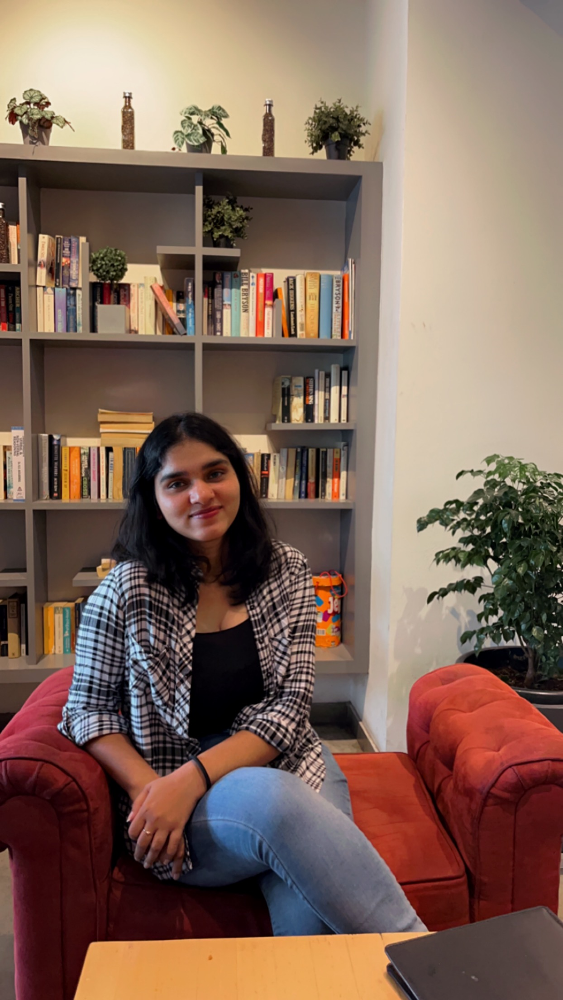

My story
I grew up in a family of artists, which meant visual thinking wasn't something I learned later. It was just the language at home. By the time I was three, I was already drawing.
A lot of those early years were spent at my grandfather's NGO, Young Envoys International, where he taught art and painting to underprivileged children. He'd set up his easel; I'd sit beside him with whatever paper I could find, and we'd draw together for hours. He was a retired art teacher who'd spent his life giving art away to kids who otherwise wouldn't have had access to it, and watching him work taught me something I didn't have words for at the time. Mainly: that the act of looking carefully at the world is its own kind of generosity. I still think about that.
So when it came time to choose a degree, design felt less like a decision and more like a continuation. I went to the Indian Institute of Crafts and Design (IICD) in Jaipur, expecting to keep doing what I'd always done: make things, by hand, with care.
I didn't know what UI/UX was. Honestly, I'd barely heard the term. IICD taught a broad design education (craft, materials, communication, visual systems), and I assumed I'd end up somewhere in that world.
Then, on one project, I was put in charge of documentation and presentation. It was supposed to be the boring part. It wasn't. Organizing the team's research into a story someone else could follow, designing the structure of the deck so the logic came through as clearly as the images: that was the first time I noticed I was paying attention differently. The visual still mattered to me, but suddenly the interaction did too: how someone moves through information, what they need to see first, what gets in their way.
That project rewired something. I started seeking out interaction design wherever I could find it, and by the time I graduated, I knew I wasn't going back to pure craft. I wanted to design how people meet the things we build.
A year and a half of industry work followed: first as a Product Designer at PixelWave, then a UI/UX Designer at Johnson & Johnson working on their Identity Governance application. J&J was where I learned what enterprise UX actually feels like: systems that are deeply complex, users who don't have a choice about using them, and the responsibility that comes with both.
Which brings me to San Jose State University, where I'm now finishing a Master's in Human Factors & Ergonomics. The Master's is letting me go deeper on the parts of UX I was always pulled toward but never had vocabulary for: cognition, decision-making, the messy interaction between humans and the increasingly autonomous systems they share their lives with.
My focus now is Human-AI interaction. Which is, when I look back at it, just the most recent version of the same question I've been asking since I was sitting next to my grandfather: how do we help people see clearly?



Skills & tools
The toolkit I reach for day to day.
Experience
A quick snapshot.
Junior UI/UX Designer
- Led the end-to-end design of an Identity Governance Application, improving security workflows and reducing user friction through intuitive, user-centered interfaces.
- Conducted user research, task analysis, and usability evaluations to uncover pain points and inform data-driven design decisions that enhanced overall system usability.
- Designed wireframes, high-fidelity prototypes, and design system components, ensuring consistent visual language and scalable UI patterns across the application.
- Collaborated closely with developers, product managers, and stakeholders to translate complex technical requirements into clear interaction flows and accessible design solutions.
Product Designer
- Designed the company's brand identity and website, ensuring a cohesive and visually appealing user experience.
- Conducted usability tests and implemented design improvements to enhance website functionality and user engagement.
- Created responsive landing pages and user-centered digital experiences using Figma and Adobe XD for wireframing and prototyping.
- Applied UX design principles gained through hands-on project work to improve real-world design outcomes.
- Collaborated with cross-functional teams to deliver effective, visually compelling digital solutions and strengthen the company's online presence.
Education
Master's in Human Factors & Ergonomics
Current GPA: 3.7
Integrated Master's in Product Design
GPA: 4.0 / 4.0
Let's create something together.
Open to new projects, collaborations, and conversations.
Get in touch